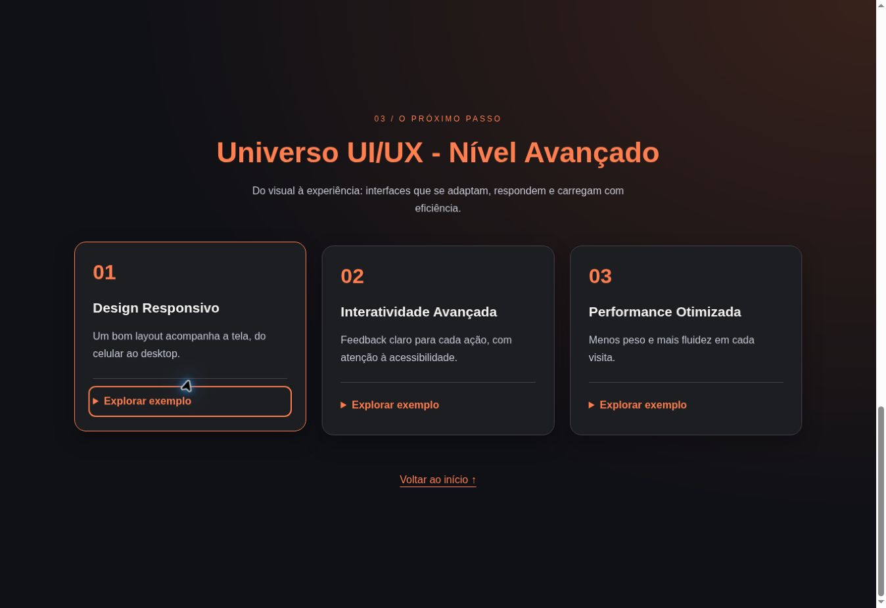
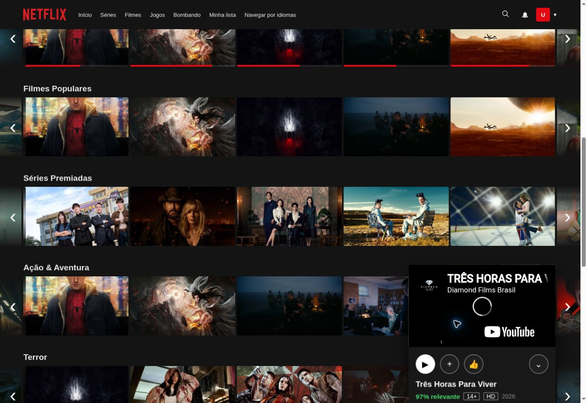

PROJETO 02 · INTERFACEUniverso
Universo
UI/UX.
Um estudo de evolução visual: do básico ao avançado, explorando layout, responsividade e interação.

SUPORTE EM TI + DESENVOLVIMENTO
Pessoas primeiro.
Tecnologia para fazer acontecer.
Sou técnico em TI e estudante de Análise e Desenvolvimento de Sistemas. Entre resolver problemas e escrever código, estou construindo meu caminho.
O suporte me ensinou a olhar para quem usa a tecnologia. O desenvolvimento me dá uma nova maneira de resolver seus problemas.
Minha base está na prática: manutenção, configuração de sistemas e apoio a usuários. Hoje, levo essa experiência para o estudo de sistemas e para os primeiros projetos web.
Formação em Manutenção e Suporte em Informática na ETEPAM. Computadores, impressoras, sistemas operacionais e redes fazem parte dessa bagagem.
A experiência administrativa também faz parte da minha trajetória. Organização e atenção às pessoas acompanham minha escolha de seguir na tecnologia.
Na FICR, estudo Análise e Desenvolvimento de Sistemas. No GitHub, transformo o aprendizado em projetos e experimento novas possibilidades na web.
Um estudo de evolução visual: do básico ao avançado, explorando layout, responsividade e interação.

A página fica mais complexa; o objetivo continua simples: criar uma experiência clara, útil e interessante de explorar.
Um projeto de estudo inspirado em streaming, com catálogo conectado à API do TMDB, busca e trailers. Uma oportunidade para aproximar JavaScript de conteúdo real.
Projeto educacional de interface. Os trailers e o catálogo não constituem um serviço de streaming.

Filtre por tema e veja o que cada projeto explora.
5 projetos exibidos.
Labels, campos, seleção de categoria e validação nativa: a estrutura de um formulário.
Uma experiência em três níveis, com layout responsivo e seções interativas.
Conteúdo da API, busca e catálogo: aprendendo a trabalhar com dados na interface.
Uma vitrine de achadinhos pensada para celular, com filtros, modos claro e escuro e links de afiliado para o Mercado Livre.
Abrir o Garimpo SmartUm fluxo com n8n, Node.js e Docker para preparar a curadoria de produtos. Autenticação OAuth implementada; busca de ofertas e geração automática de links em investigação.
Os níveis contam a evolução desta experiência visual.
Minha trajetória continua em construção, um projeto por vez.
Tem uma oportunidade em TI ou um projeto em mente? Escolha o canal que preferir para conversar comigo.